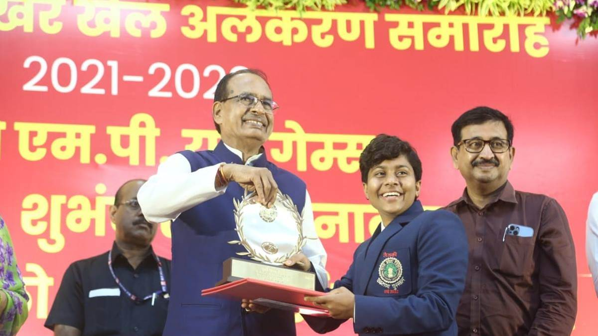

Sports and Youth Welfare Minister Smt. Yashodhara Raje Scindia said that as per the wish of Chief
Minister Shri Chouhan, 'Khelo MP Youth Games-2023' will be organised in the month of September. Smt.
Scindia was reviewing the preparations for the Khelo MP Youth Games with the departmental officers
on Tuesday. It is noteworthy that after the success of Khelo India Youth Games held for the first
time in Bhopal, Chief Minister Shri Shivraj Singh Chouhan had announced that now 'Khelo MP Youth
Games-2023' will be organised. Sports Minister Smt. Scindia said that 'Khelo MP Youth Games' will be
held in all 52 districts. Youths under the age of 18 will showcase their talents in 24 sports
athletics, basketball, badminton, boxing, football, hockey, judo, kabaddi, kho-kho, malkhamb,
shooting, swimming, weightlifting, wrestling, table-tennis, yogasan, taekwondo, volleyball,
kayaking-canoeing, rowing, fencing, archery, chess and tennis at district, divisional and state
level in three phases. State level athletics and shooting competitions will be held at Sports
Complex, TT Nagar. Boxing, Taekwondo, Judo, Fencing, Tennis competitions will be held Bhopal’s TT
Nagar Stadium, Kayaking Canoeing and Rowing in Upper Lake and Swimming competitions in Taran Pushkar
Bhopal. Sports Minister Smt. Scindia said that men's football will be held at Mulna Stadium in
Balaghat, basketball and weightlifting at Indore's Basketball Complex, volleyball at Abhay Prashal,
women's football competitions will be held at Emerald Heights School. In Gwalior badminton
competitions will be held at the MP Badminton Academy Camp in Gwalior and hockey at the MP Women's
Hockey Academy. Mallakhamb and Yogasana competitions will be held at Sports Complex Ujjain, Kho-Kho
and Archery at Ranital Sports Complex (Cricket Stadium) of Jabalpur. Kabaddi competitions will be
held at Sports Complex Rewa, table-tennis and chess at Indoor Hall Madhav Nagar, Katni and wrestling
at Shyama Prasad Mukherjee Stadium, Khandwa.
Sports Minister inspected Nathu Barkheda construction site despite rain and slush Sports and Youth
Welfare Minister Smt. Scindia inspected the International Sports Complex taking shape at Nathu Barkheda
in Bhopal on Tuesday. Despite rain and slush, Smt. Scindia took stock of the progress of the first phase
of works under construction. She inspected the East-West Pavilion, Athletic Track, Hockey Turf, Hockey
Practice Turf etc. and instructed the officers and concerned project heads to complete the works in a
quality and time-bound manner.